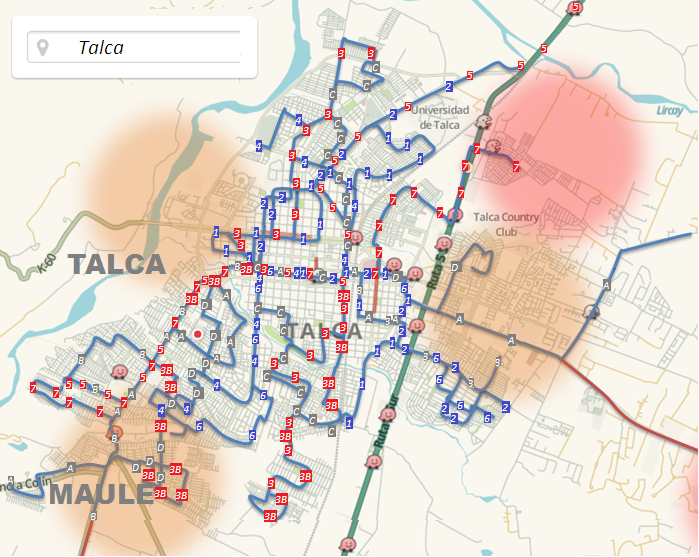
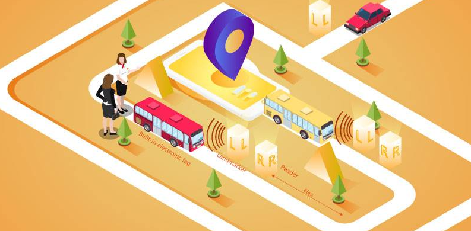

Sistema de Gestión para las empresas del transporte Público
te permite controlar y saber de forma rápida los servicios que se encuentran en recorrido

Podrás monitorizar los recorridos activos y donde se encuentran
Con un mapa en tiempo real

Los usuarios también podran revisar en tiempo real su microbus
Con la aplicación movil TransporTracking